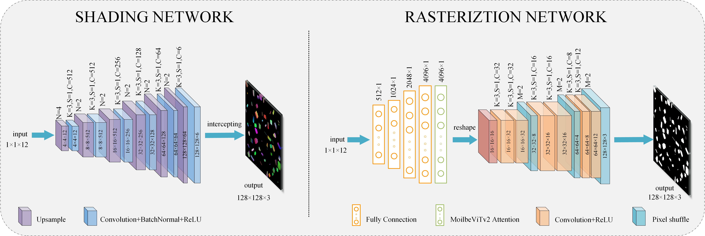

DrawNet: A neural painting network with attention module
Fachao Zhang a, Xiaoman Lianga,b,*, Yuan Qina,Huihuang Zhaoa,b
a College of Computer Science and Technology, Hengyang Normal University, Hengyang,421002, China
b Hunan Provincial Key Laboratory of Intelligent Information Processing and Application, Hengyang, 421002, China
Demo(.gif)


Demo(.png)
The result of our method of painting brush by brush with watercolor brushes (first row), oilpaint brushes (second row) and markerpen brushes (third row).

input
output
Abstract
In this paper, we propose a new image-to-painting translation method that can generate paintings on a stroke by stroke basis. Unlike previous pixel-to-pixel or sequential optimization methods, our method generates a set of physically meaningful stroke parameters that can be further rendered using a renderer. We add an attention mechanism network to the proposed renderer to improve the quality of the painting images, and use Smooth Ll loss in the training process of the renderer to make the model converge faster. Experimental results show that our renderer outperforms other renderers and improves the PSNR evaluation metric by 3.7% over the previous renderer. Our code and more results are available at https://zhangfc7.github.io/DrawNet/
Method
The flowchart of our DrawNet is shown in Fig. 1.
Figure 1. Flow Chart
Network
In this paper we propose a novel network named DrawNet, which consists of two convolutional neural networks: a Shading network, which accepts color and shape parameters for generating foreground strokes with color, and a Rasteriztion network, which ignores stroke color and generates clear stroke. The structure of DrawNet is shown in Figure 2. Shading network mainly consists of up-sampling, convolution, BatchNormal, ReLU activation function and other modules. The main methods of upsampling are: transposed convolution, nearest neighbor interpolation, bilinear interpolation, etc. Although transposed convolution has shown good results in many fields, the "tessellation effect" occurs if the convolution kernel size is not divisible by the step size [15]. In the upsampling module of the Shading network we use bilinear interpolation, which does not need to learn any parameters, which speeds up the computation of the model.The Rasteriztion network is mainly composed of fully connected, ReLU, convolution, and Pixel shuffle [16] modules, and we add a fully connected layer followed by A MoblieVit2Attention module [17] was added after the fully connected layer and better output was observed.
Figure 2. The network structure of DrawNet, K is the kernel size, C is the number of feature maps, S is the step size in each convolutional layer, and M and N are the scaling factors.
Experiments
We conducted our experiments on an Intel Core i7-12700 + Nvidia RTX3090 device, fixing the random seed values in all experiments. The optimizer uses Adam, we set epoch to 400, batchsize to 64, learning rate to 2e-4 and decay the learning rate to 0.1 every 100 epochs, so we can see from Figure 4 that the model converges significantly faster at epochs of 100, 200 and then stabilizes. The convergence rate of the model becomes faster and then stabilizes. In each epoch, we randomly generate 50,000*64 ground truth images. The model converges after 400 epochs of training. We trained renderers for four types of strokes, namely oilpaint, watercolor, crayon, and markerpen. we compared our proposed renderer with those of other network structures and found that our renderer gave the best results. As shown in the figure below, our renderer has higher values of PSNR and SSIM than all the other four renderers, and also our renderer converges faster than all the other four renderers during the training process.

Figure 3. Variation curves of PSNR and SSIM during the training process
Image-to-Painting Translation

Figure 4. Experimental results, (a): input (b): oilpaint (c): watercolor (d): markerpen (e): crayon
Style Transfer
Figure 5. Style transfer results
Figure 6. Style transfer results